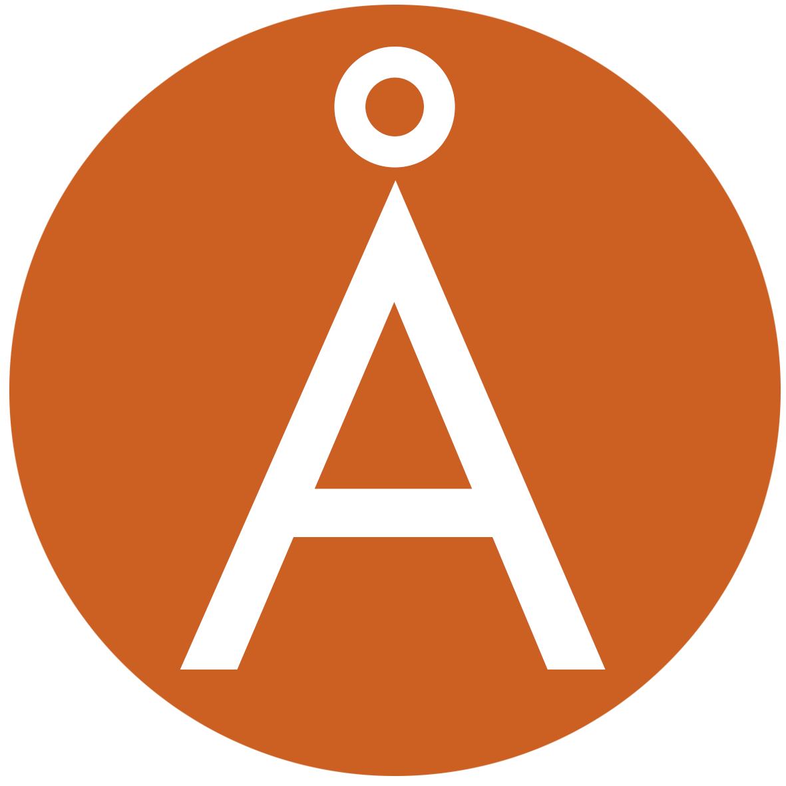

The 2026 Cascadia Symposium on Statistics in Sports is a meeting of statisticians and quantitative analysts connected with sports teams, sports media, and universities to discuss common problems of interest in statistical modeling and analysis of sports data. The symposium format is a mixture of invited talks, a poster session, and a panel discussion.
Founded in 2016, CASSIS alternates years with the
New England Symposium on Statistics in Sports,
held in odd-numbered years in Boston.
A big thanks to our sponsors for supporting the event

Abstract submissions have closed.
Registration is now open.
Visit the registration site to secure your ticket.
CASSIS will be held at SFU Harbour Center in downtown Vancouver on Saturday, September 12, 2026.
Most participants will arrive via YVR Vancouver Airport. From the airport, you may take a taxi downtown, or take the Canada Line, exiting at Waterfront Station, which is 1 block from the conference venue.
There are dozens of hotels within walking distance of the conference location. Book early, as Vancouver is a popular tourist destination. For more affordable options, note that SFU Harbour Centre is very close to the sky train station with frequent trains to Richmond, Burnaby, and beyond. Don't hesitate to contact us with questions: